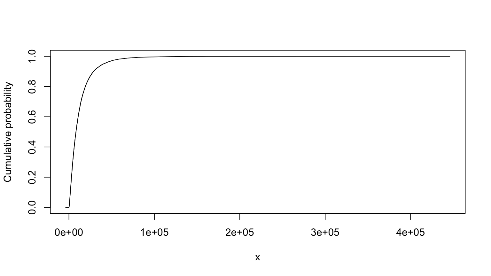
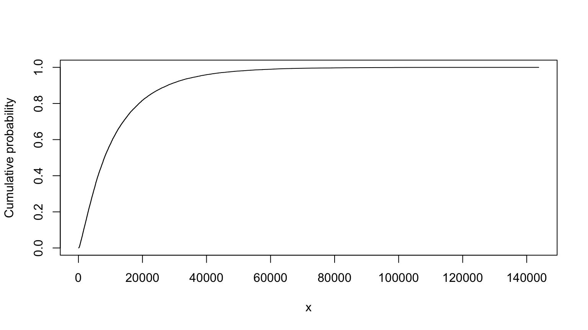
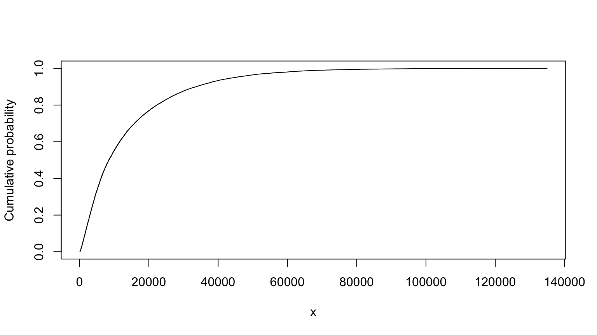

Working notebook for SRA 2021 Workshop 7, “Monte Carlo simulation and probability bounds analysis in R with hardly any data (Instructors: Ferson & Grey)”
library(MASS)
library(sn)Download sra.r and pba.r from https://sites.google.com/site/hardlyanydata and source
it into R. Set RStudio = TRUE for use within RStudio and
save the file. The library also requires the package sn.
Use rm(list = ls()) to clear R environment.
There is another version of pba.r on GitHub
Monte Carlo example from class using sra.R; contaminant
plume (from Lobascio), slide 37-39 in the workshop PowerPoint:
View the cumulative probability plot by entering the letter in the console.
source("assets/sra.R")## :sra> library loaded# nolint start
L <- uniform(80, 120) # [m], source-receptor distance
i <- uniform(0.0003, 0.0008) # [], hydraulic gradient
K <- lognormal(1000, 750) # [m yr1], hydraulic conductivity
n <- lognormal(0.25, 0.05) # [], effective soil porosity
BD <- lognormal(1650, 100) # [kg per m3], soil bulk density
foc <- uniform(0.0001, 0.005) # fraction organic carbon
Koc <- normal(10, 3) # [m3 per kg], partition coefficient
T <- (n + BD * foc * Koc) * L / (K * i) # all variables assumed independent
summary(T)##
## Monte Carlo distribution summary
## Mean: 12856.08
## Variance: 224938613
## Std Deviation: 14997.95
## Width of interquartile range: 12847.06
## Width of overall range: 243404.6
## Order statistics
## Left (min) value: -0.9075293
## 1st percentile: 333.434
## 5th percentile: 929.1476
## 25th percentile: 3668.287
## Median (50th%ile): 8087.811
## 75th percentile: 16515.35
## 95th percentile: 40016.31
## 99th percentile: 72446.79
## Right (max) value: 243403.7
## Replications: 20000T
## MC (min=-0.90752931207862, median=8087.81078245944, mean=12856.0750485915, max=243403.730750865)# nolint endTruncated version, from slide 40:
# nolint start
L <- uniform(80, 120) # [m], source-receptor distance
i <- uniform(0.0003, 0.0008) # [], hydraulic gradient
K <- lognormal(1000, 750) # [m yr1], hydraulic conductivity
K <- truncate(K, 300, 3000)
n <- lognormal(0.25, 0.05) # [], effective soil porosity
n <- truncate(n, 0.2, 0.35)
BD <- lognormal(1650, 100) # [kg per m3], soil bulk density
BD <- truncate(BD, 1500, 1750)
foc <- uniform(0.0001, 0.005) # fraction organic carbon
Koc <- normal(10, 3) # [m3 per kg], partition coefficient
Koc <- truncate(Koc, 5, 20)
T <- (n + BD * foc * Koc) * L / (K * i)
summary(T)##
## Monte Carlo distribution summary
## Mean: 12164.79
## Variance: 162169908
## Std Deviation: 12734.59
## Width of interquartile range: 12359.34
## Width of overall range: 130234.8
## Order statistics
## Left (min) value: 89.35449
## 1st percentile: 377.3224
## 5th percentile: 968.9486
## 25th percentile: 3704.637
## Median (50th%ile): 8051.243
## 75th percentile: 16063.97
## 95th percentile: 37448.4
## 99th percentile: 61220.33
## Right (max) value: 130324.2
## Replications: 20000T
## MC (min=89.3544908348222, median=8051.24325666704, mean=12164.7856200285, max=130324.16700688)# nolint endMaximum entropy version, from slide 70:
T and Tind are pretty similar. In this case, the maximum entropy approach comes up with a similar distribution as the truncated approach.
# nolint start
L <- MEmmms(80, 120, 100, 11.55) # source-receptor distance
i <- MEmmms(0.0003, 0.0008, 0.00055, 0.0001443) # hydraulic gradient
K <- MEmmms(300, 3000, 1000, 750) # hydraulic conductivity
n <- MEmmms(0.2, 0.35, 0.25, 0.05) # effective soil porosity
BD <- MEmmms(1500, 1750, 1650, 100) # soil bulk density
foc <- MEmmms(0.0001, 0.005, 0.00255, 0.001415) # fraction organic carbon
Koc <- MEmmms(5, 20, 10, 3) # organic partition coefficient
Tind <- (n + BD * foc * Koc) * L / (K * i)
summary(Tind)##
## Monte Carlo distribution summary
## Mean: 14025.88
## Variance: 229087197
## Std Deviation: 15135.63
## Width of interquartile range: 15465.12
## Width of overall range: 132380.6
## Order statistics
## Left (min) value: 86.44407
## 1st percentile: 354.5949
## 5th percentile: 979.9713
## 25th percentile: 3693.612
## Median (50th%ile): 8547.073
## 75th percentile: 19158.73
## 95th percentile: 44657.71
## 99th percentile: 70610.27
## Right (max) value: 132467.1
## Replications: 20000Tind
## MC (min=86.4440687497689, median=8547.07323704723, mean=14025.8814955205, max=132467.060042648)# nolint endConduct the same analysis using PBA, from slide 162. See the important note from slide 162 below.
Note: N.B. The implementation of mmms in pba.r is incomplete so, while its results are bounds, they are not best possible bounds
# ideally we'd clear the environment with `rm(list = ls())`, but that doesn't work here;
# an alternative would be to move this to a separate notebook. This approach appears to be OK,
# outputs from running just the setup and the entire notebook are the same.
# this code breaks build_analysis_site() - commented out because of that.
# uncomment this code and it should work within the notebook in RStudio.
# nolint start
# source("assets/pba.R")
#
# L <- mmms(80, 120, 100, 11.55) # source-receptor distance
# i <- mmms(0.0003, 0.0008, 0.00055, 0.0001443) # hydraulic gradient
# K <- mmms(300, 3000, 1000, 750) # hydraulic conductivity
# n <- mmms(0.2, 0.35, 0.25, 0.05) # effective soil porosity
# BD <- mmms(1500, 1750, 1650, 100) # soil bulk density
# foc <- mmms(0.0001, 0.005, 0.00255, 0.001415) # fraction organic carbon
# Koc <- mmms(5, 20, 10, 3) # organic partition coefficient
#
# up <- 100000 # detail
# Tind <- (n + BD * foc * Koc) * L / (K * i)
# Tind <- pmin(Tind, up)
#
# summary(Tind)
# Tind
# nolint end